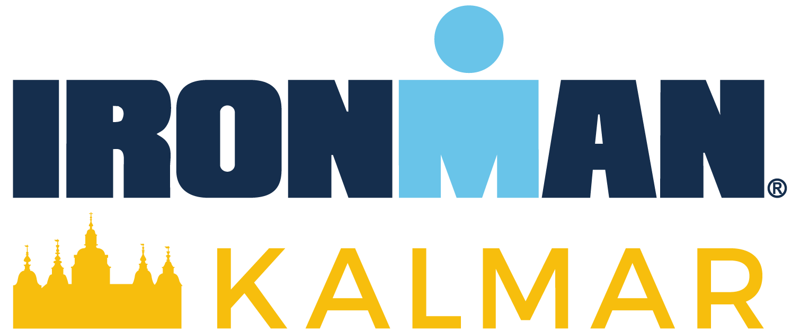

Sprawdzam sygnały z organizmu.
ROAD TO IRONMAN

226 km celu. Jeden spokojny, mądry dzień po drugim.
🏊 3.8 km
🚴 180 km
🏃 42.2 km
📅 Do startu
--
dni
Szymon AI Coach
Co dziś zrobić?
Czekam na dane Garmin...
Po synchronizacji pokażę krótką, ludzką odpowiedź: trenować, lekko ruszyć się czy odpocząć.
Sen: —
Body Battery: —
Stress avg: —
Load 7d: —
Load 28d: —
Czekam na wpis dziennika.
Gotowość
57
/100
Droga do Kalmar
--%
Every workout counts.
Regeneracja
--/100
brak danych
czekam na dane
Ostatnia aktywność PRO
—
otwórz
Garmin Sync uzupełni historię.
Garmin Sync
—
—
Sprawdzam...
Garmin PRO
read only
Garmin PRO
Prawdziwe dane z Garmin Sync Agent PRO — tylko odczyt. Pełne karty są w historii PRO.
Pobieram dane Garmin PRO...
Tydzień Garmin PRO
🏊 0 km0 min
🚴 0 km0 min
🏃 0 km0 min
⚡ Load 028d: 0
Ostatnia aktywność Garmin PRO
● ROAD TO IRONMAN KALMAR 2026
Analiza AI
Pierwsze automatyczne wnioski z historii Swim / Bike / Run.
Gotowość do treningu
Analizuję ostatnie 7 dni i obciążenie.
--/100
Regeneracja
Stan organizmu Garmin
--/100Czekam na dane z Garmin Sync Agent.
Sen—
Body Battery—
Stres—
Tętno spocz.—
Ostatnie dni
7 dni
Trend regeneracji
Ostatnie 7 dni
🏊0km pływania
🚴0km roweru
🏃0km biegu
Obciążenie tygodnia--
Balans triathlonowy
🏊 Swim0%
🚴 Bike0%
🏃 Run0%
AI Coach
beta
Wnioski po ludzku
🟡 Dodaj trening, a AI przygotuje pierwszą ocenę.
Propozycja na jutro
Plan tygodnia AI beta
Prosty plan generowany z aktualnej historii Swim / Bike / Run. To nie zastępuje lekarza, dietetyka ani trenera — pomaga pilnować balansu i czerwonych flag do Kalmar.
● ROAD TO IRONMAN KALMAR 2026
Wsparcie AI
Krótko: wpis dnia, analiza i rozmowa z AI Coach.
AI Coach Memory
Pamięć drogi do Kalmar
Zapisuj krótko, jak minął dzień. AI wykorzysta to przy kolejnych wskazówkach.
AI
Mądre decyzje zawodnika
SAFE
AI Coach ma wspierać jak trener
AI Coach pomaga podjąć mądrą decyzję sportową: łączy treningi, sen, Body Battery, stres i wpis dnia. Ma wspierać ambicję Szymona, ale nie udaje lekarza, dietetyka klinicznego ani trenera z uprawnieniami.
- Przy bólu, chorobie, duszności, zawrotach głowy lub bólu w klatce — bez mocnego treningu i konsultacja z dorosłym/specjalistą.
- Przy słabym śnie, niskim Body Battery lub wysokim stresie — aplikacja wybiera mądrzejszy wariant treningu, zamiast dokładania ambicji na siłę.
- Przy diecie AI nie proponuje głodzenia ani cięcia kalorii — pilnuje paliwa, nawodnienia i regeneracji.
Prawdziwe AI przez backend
AI
Gemini AI Coach
AI dziś: 0/6.
Gotowe do analizy. Używaj po aktualnym wpisie dnia albo po synchronizacji Garmina.
Brak analizy Gemini. Kliknij przycisk, żeby pobrać pierwszą bezpieczną analizę.
AI dziś: 0/6.
Zadaj jedno pytanie. Nowe pytanie zastąpi poprzednią odpowiedź.
Tu pojawi się odpowiedź AI Coach na ostatnie pytanie. Kolejne pytanie zastąpi poprzednią odpowiedź.
Raport zawodnika
PDF
Ostatnie 3 dni
Zbierz dane w jeden raport do skopiowania albo wydruku.
Raport nie zużywa limitu Gemini.
Raport pojawi się tutaj po kliknięciu przycisku.
Czekam na dane.
Dodaj wpis dnia.
Brak wpisu.
Czekam na metryki.
Wpis dnia
pamięć AI
Dziś jadłem / czułem się...
Wpis dnia zostanie zapamiętany.
Pamięć
Ostatnie wpisy
0 wpisów
Brak wpisów. Pierwszy wpis dnia stworzy początek pamięci AI.
● ROAD TO IRONMAN KALMAR 2026
Dodaj trening
Dodaj trening z Garmin Connect lub wprowadź ręcznie.
Garmin Link służy jako źródło szczegółów pojedynczego treningu. Jeśli przeglądarka zablokuje automatyczny odczyt, zapiszemy link i ID aktywności razem z ręcznie wpisanymi danymi.
Wklej link Garmin /modern/activity/... albo /app/activity/... i kliknij Analizuj.
👁️ Szybki podgląd
🏃 Run
15,08 kmDystans
69 minCzas
Sprawdź dane przed zapisaniem do historii.
● ROAD TO IRONMAN KALMAR 2026
Historia treningów
Przeglądaj treningi i analizuj postępy.
Podsumowanie okresu
Łącznie treningów 0🏊Pływanie0 km0 min
🚴Rower0 km0 min
🏃Bieganie0 km0 min
Historia treningów
● ROAD TO IRONMAN KALMAR 2026
Ustawienia
Konto, profil i podstawowe ustawienia.
Tryb widoku
Basic
Basic / Advanced
Basic pokazuje tylko najważniejsze rzeczy na co dzień. Advanced odblokowuje pełne dane, analizy i narzędzia.
Aktualny widok: Basic.
Konto
Konto Szymona jest zalogowane na tym urządzeniu.
Sprawdzam sesję...
Profil Szymona
Cel i data startu dla Road to Kalmar.
Profil gotowy do edycji.
Źródła danych
v2.9Aplikacja korzysta teraz z automatycznego Garmin Sync Agenta na Proxmoxie oraz z ręcznego Garmin Link dla pojedynczych szczegółów.
Garmin Sync Agent
Działa teraz: kontener Proxmox pobiera aktywności z Garmin Connect i zapisuje je do Supabase.
Automat działa o 06:15, 10:15, 14:15, 18:15 i 21:00.Garmin Link
Działa teraz: wklejasz publiczny link do pojedynczego treningu i aplikacja próbuje uzupełnić dane.
Najlepsze do szczegółów: ważny bieg, długi rower, zawody, testy.FIT / TCX
Opcja później: import pliku treningowego, gdy link albo Strava nie da pełnych danych.
Rezerwowe źródło dokładnych danych z Garmina.
Strategia Road to Kalmar:
Garmin Sync Agent tworzy codzienną historię automatycznie, a Garmin Link zostaje do ręcznego uzupełniania wybranych aktywności.
Garmin Sync Agent: sprawdzam status...
Dane
Łączenie z Supabase...
📱 Instalacja na iPhone
Safari → Udostępnij → Dodaj do ekranu początkowego.